용접산업기사 (2015-08-16 기출문제)
1과목: 용접야금 및 용접설비제도
1. 재가열균열시험법으로 사용되지 않는 것은?
- 고온인장시험
- 변형이완시험
- 자율구속도시험
- 크리프저항시험
(정답률: 53%)

2. 강의 표면경화법이 아닌 것은?
- 불림
- 침탄법
- 질화법
- 고주파 열처리
(정답률: 62%)
3. 용접하기 전 예열하는 목적이 아닌 것은?
- 수축 변형을 감소한다.
- 열영향부의 경도를 증가시킨다.
- 용접 금속 및 열영향부에 균열을 방지 한다.
- 용접 금속 및 열영향부에 연성 또는 노치 인성을 개선한다.
(정답률: 79%)
4. 용융금속 중에 첨가하는 탈산제가 아닌 것은?
- 규소 철(Fe-Si)
- 타탄 철(Fe-Ti)
- 망간 철(Fe-Mn)
- 석회석(CaCO3)
(정답률: 61%)
5. 철강 재료의 변태 중 순철에서는 나타나지 않는 변태는?
- A1
- A2
- A3
- A4
(정답률: 57%)
6. γ고용체와 α고용체의 조직은?
- γ고용체 = 페라이트조직, α고용체 = 오스테나이트조직
- γ고용체 = 페라이트조직, α고용체 = 시멘타이트조직
- γ고용체 = 시멘타이트조직, α고용체 = 페라이트조직
- γ고용체 = 오스테나이트조직, α고용체 = 페라이트조직
(정답률: 66%)
7. 고장력강 용접시 일반적인 주의사항으로 틀린 것은?
- 용접봉은 저주소계를 사용한다.
- 아크 길이는 가능한 길게 유지한다.
- 위빙 폭은 용접봉 지름의 3배 이하로 한다.
- 용접 개시 전에 이음부 내부 또는 용접할 부분을 청소한다.
(정답률: 89%)
8. 비열이 가장 큰 금속은?
- Al
- Mg
- Cr
- Mn
(정답률: 42%)
9. 용접 후 잔류응력이 있는 제품에 하중을 주고 용접부에 소성변형을 일으키는 방법은?
- 연화 풀림법
- 국부 풀림법
- 저온 응력 완화법
- 기계적 응력 완화법
(정답률: 88%)
10. 이종의 원자가 결정격자를 만드는 경우 모재원자보다 작은 원자가 고용할 때 모재원자의 틈새 또는 격자결함에 들어가는 경우의 고용체는?
- 치환형고용체
- 변태형고용체
- 침입형고용체
- 금속간고용체
(정답률: 81%)
11. 평면도법에서 인벌류트곡선에 대한 설명으로 옳은 것은?
- 원기둥에 감긴 실의 한 끝을 늦추지 않고 풀어나갈 때 이 실의 끝이 그리는 곡선이다.
- 1개의 원이 직선 또는 원주 위르 굴러갈 때 그 구르는 원의 원주 위의 1점이 움직이며 그려 나가는 자취를 말한다.
- 전동원이 기선 위를 굴러갈 때 생기는 곡선을 말한다.
- 원뿔을 여러 가지 각도로 절단하였을 때 생기는 곡선이다.
(정답률: 52%)
12. 한 도면에서 두 종류 이상의 선이 같은 장소에 겹치게 될 때 우선순위로 옳은 것은?
- 숨은선→절단선→외형선→중심선→무게중심선
- 외형선→중심선→절단선→무게중심선→숨은선
- 숨은선→무게중심선→절단선→중심선→외형선
- 외형선→숨은선→절단선→중심선→무게중심선
(정답률: 79%)
13. 다음 중 용접기호에 대한 명칭으로 틀린 것은?
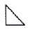
: 필릿 용접- : 한쪽면 수직 맞대기 용접
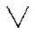
: V형 맞대기 용접- : 양면 V형 맞대기 용접
(정답률: 79%)
14. 다음 용접 기호 중 이면 용접 기호는?
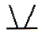
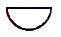
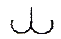
(정답률: 81%)
15. 용접부 보조기호 중 제거 가능한 덮개판을 사용하는 기호는?
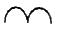
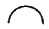
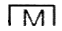
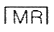
(정답률: 84%)
16. 도면에 치수를 기입하는 경우에 유의사항으로 틀린 것은?
- 치수는 되도록 주 투상도에 집중한다.
- 치수는 되도록 계산할 필요가 없도록 기입한다.
- 치수는 되도록 공정마다 배열을 분리하여 기입한다.
- 참고 치수에 대하여는 치수에 원을 넣는다.
(정답률: 73%)
17. 척도에 관계없이 적당한 크기로 부품을 그린 후 치수를 측정하여 기입하는 스케치 방법은?
- 프린트법
- 프리핸드법
- 본뜨기법
- 사진촬영법
(정답률: 82%)
18. 3각법에서 물체의 위에서 내려다 본 모양을 도명네 표현한 투상도는?
- 정면도
- 평면도
- 우측면도
- 좌측면도
(정답률: 92%)
19. 가는 실선으로 규칙적으로 줄을 늘어놓은 것으로 도형의 한정된 특정 부분을 다른 부분과 구별하는데 사용하며 예를 들면 단면도의 절단된 부분을 나타내는 선의 명칭은?
- 파단선
- 지시선
- 중심선
- 해칭
(정답률: 66%)
20. 도면에서 척도를 기입하는 경우, 도면을 정해진 척도값으로 그리지 못하거나 비례하지 않을 때 표시방법은?
- 현척
- 축척
- 배척
- NS
(정답률: 86%)
2과목: 용접구조설계
21. 맞대기 용접이음에서 각 변형이 가장 크게 나타날 수 있는 홈의 형상은?
- H형
- V형
- X형
- I형
(정답률: 60%)
22. 가접에 대한 설명으로 틀린 것은?
- 본 용접 전에 용접물을 잠정적으로 고정하기 위한 짧은 용접이다.
- 가접은 아주 쉬운 작업이므로 본 용접사보다 기량이 부족해도 된다.
- 홈 안에 가접을 할 경우 본 용접을 하기 전에 갈아낸다.
- 가접에는 본 용접보다는 지름이 약간 가는 용접봉을 사용한다.
(정답률: 92%)
23. 용접에 의한 용착효율을 구하는 식으로 옳은 것은?
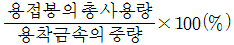
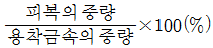
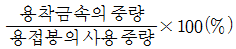
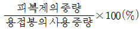
(정답률: 70%)
24. 맞대기 용접에서 제1층부에 결함이 생겨 밑면 따내기를 하고자 할 때 이용되지 않는 방법은?
- 선삭(turning)
- 핸드 그라인더에 의한 방법
- 아크 에어 가우징(arc air gouging)
- 가스 가우징(gas gouging)
(정답률: 74%)
25. 용접구조물에서의 비틀림 변형을 경감시켜주는 시공상의 주의사항 중 틀린 것은?
- 집중적으로 교차 용접을 한다.
- 지그를 활용한다.
- 가공 및 정밀도에 주의한다.
- 이음부의 맞춤을 정확하게 해야 한다.
(정답률: 90%)
26. 불활성가스 텅스텐 아크용접 이음부 설계에서 I형 맞대기 용접이음의 설명으로 적합한 것은?
- 판 두께가 12mm 이상의 두꺼운 판 용접에 이용된다.
- 판 두께가 6~20mm 정도의 다층 비드용접에 이용된다.
- 판 두께가 3mm 정도의 박판용접에 많이 이용된다.
- 판 두께가 20mm 이상의 두꺼운 판 용접에 이용된다.
(정답률: 85%)
27. 아크용접시 용접이음의 용융부 밖에서 아크를 발생시킬 때 모재표면에 결함이 생기는 것은?
- 아크 스트라이크(arc strike)
- 언더 필(under fill)
- 스캐터링(scattering)
- 은점(fish eye)
(정답률: 83%)
28. 맞대기 용접 이음의 피로강도 값이 가장 크게 나타나는 경우는?
- 용접부 이면 용접을 하고 용접 그대로인 것
- 용접부 이면 용접을 하지 않고 표면용접 그대로인 것
- 용접부 이면 및 표면을 기계 다듬질한 것
- 용접부 표면의 덧살만 기계 다듬질한 것
(정답률: 50%)
29. 용접부 검사법에서 파괴 시험방법 중 기계적 시험방법이 아닌 것은?
- 인장시험(tensile test)
- 부식시험(corrosion test)
- 굽힘시험(bending test)
- 경도시험(hardness test)
(정답률: 86%)
30. 양면 용접에 의하여 충분한 용입을 얻으려고 할 때 사용되며 두꺼운 판의 용접에 가장 적합한 맞대기 홈의 형태는?
- J형
- H형
- V형
- I형
(정답률: 84%)
31. 용접시 발생되는 용접변형을 방지하기 위한 방법이 아닌 것은?
- 용접에 의한 국부 가열을 피하기 위하여 전체 또는 국부적으로 가열하고 용접한다.
- 스트롱 백을 사용한다.
- 용접 후에 수냉처리를 한다.
- 역변형을 주고 용접한다.
(정답률: 68%)
32. 아크전류 200(A), 아크전압 30(V), 용접속도 20(cm/min) 일 때 용접 길이 1cm당 발생하는 용접입열(Joule/cm)은?
- 12000
- 15000
- 18000
- 20000
(정답률: 54%)
33. 강판의 두께 15mm, 폭 100mm의 V형 홈을 맞대기 용접이음할 때 이음효율을 80%, 판의 허용응력을 35kgf/mm2로 하면 인장하중(kgf)은 얼마까지 허용할 수 있는가?
- 35000
- 38000
- 40000
- 42000
(정답률: 44%)
34. 용접변형 방지방버에서 역변형법에 대한 설명으로 옳은 것은?
- 용접물을 고정시키거나 보강재를 이용하는 방법이다.
- 용접에 의한 변형을 미리 예측하여 용접하기 전에 반대쪽을 변형을 주는 방법이다.
- 용접물을 구속시키고 용접하는 방법이다.
- 스트롱 백을 이용하는 방법이다.
(정답률: 87%)
35. 용접작업시 적절한 용접지그의 사용에 따른 효과로 틀린 것은?
- 용접 작업을 용이하게 한다.
- 다량생산의 경우 작업능률이 향상된다.
- 제품의 마무리 정밀도를 향상시킨다.
- 용접변형은 증가되나, 잔류응력을 감소시킨다.
(정답률: 92%)
36. 전 용접 길이에 방사선 투과검사를 하여 결함이 1개도 발견되지 않았을 때 용접이음의 효율은?
- 70%
- 80%
- 90%
- 100%
(정답률: 88%)
37. 모세관 현상을 이용하여 표면결함을 검사하는 방법은?
- 육안검사
- 침투검사
- 자분검사
- 전자기적검사
(정답률: 73%)
38. 용접부의 이음효율 공식으로 옳은 것은?
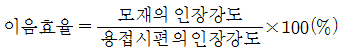
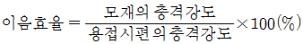
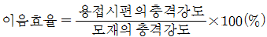
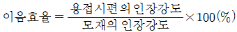
(정답률: 70%)
39. 용접부의 시점과 끝나는 분분에 용입 불량이나 각종 결함을 방지하기 위해 주로 사용되는 것은?
- 엔드 탭
- 포지셔너
- 회전 지그
- 고정 지그
(정답률: 90%)
40. 겹쳐진 두 부재의 한쪽에 둥근 구멍 대신에 좁고 긴 홈을 만들어 놓고 그 곳을 용접하는 용접법은?
- 겹치기 용접
- 플랜지 용접
- T형 용접
- 슬롯 용접
(정답률: 80%)
3과목: 용접일반 및 안전관리
41. 사람의 팔꿈치나 손목의 관절에 해당하는 움직임을 갖는 로봇으로 아크 용접용 다관절 로봇은?
- 원통 좌표 로봇(cylindrical robot)
- 직각 좌표 로봇(rectangular coordinate robot)
- 극 좌표 로봇(polar coordicate robot)
- 관절 좌표 로봇(articylated robot)
(정답률: 89%)
42. 납땜에서 용제가 갖추어야 할 조건으로 틀린 것은?
- 청정한 금속면의 산화를 방지할 것
- 모재와 땜납에 대한 부식 작용이 최소한 일 것
- 전기 저항 납땜에 사용되는 것은 비전도체일 것
- 납땜 후 슬래그의 제거가 용이할 것
(정답률: 89%)
43. 가스절단 작업에서 드래그는 판두께의 몇 % 정도를 표준으로 하는가? (단, 판두께는 25mm 이하이다.)
- 50%
- 40%
- 30%
- 20%
(정답률: 60%)
44. 레이저 용접(laser welding)의 설명으로 틀린 것은?
- 모재의 열변형이 거의 없다.
- 이종금속의 용접이 가능하다.
- 미세하고 정밀한 용접을 할 수 있다.
- 접촉식 용접방법이다.
(정답률: 81%)
45. 산소-아세틸렌 가스용접시 사용하는 토치의 종류가 아닌 것은?
- 저압식
- 절단식
- 중압식
- 고압식
(정답률: 84%)
46. 피복 아크용접의 용접 입열에서 일반적으로 모재의 흡수되는 열량은 입열의 몇 % 정도인가?
- 45 ~ 55%
- 60 ~ 70%
- 75 ~ 85%
- 90 ~ 100%
(정답률: 71%)
47. 가스용접에 사용하는 지연성 가스는?
- 산소
- 수소
- 프로판
- 아세틸렌
(정답률: 67%)
48. 용접법의 분류에서 융접에 속하는 것은?
- 전자빔 용접
- 단접
- 초음파 용접
- 마찰 용접
(정답률: 56%)
49. TIG 용접 시 안전사항에 대한 설명으로 틀린 것은?
- 용접기 덮개를 벗기는 경우 반드시 전원스위치를 켜고 작업한다.
- 제어장치 및 토치 등 전기계통의 절연 상태를 항상 점검해야 한다.
- 전원과 제어장치의 접지 단자는 반드시 지면과 접지되돌고 한다.
- 케이블 연결부와 단자의 연결 상태가 느슨해졌는지 확인하여 조치한다.
(정답률: 90%)
50. 스터드 용접에서 페롤의 역할로 틀린 것은?
- 용융금속의 유출을 촉진시킨다.
- 아크열을 집중 시켜준다.
- 용융금속의 산화를 방지한다.
- 용착부의 오염을 방지한다.
(정답률: 77%)
51. 가스절단에서 일정한 속도로 절단할 때 절단 홈의 밑으로 갈수록 슬랙의 방해, 산소의 오염 등에 의해 절단이 느려져 절단면을 보면 거의 일정한 간격으로 평행한 곡선이 나타난다. 이 곡선은 무엇이라 하는가?
- 절단면의 아크 방향
- 가스궤적
- 드래그 라인
- 절단속도의 불일치에 따른 궤적
(정답률: 89%)
52. 프랑스식 가스용접 토치의 200번 팁으로 연강판을 용접할 때 가장 적당한 판두께는?(오류 신고가 접수된 문제입니다. 반드시 정답과 해설을 확인하시기 바랍니다.)
- 판두께와 무관하다.
- 0.2mm
- 2mm
- 20mm
(정답률: 67%)
53. 피복 아크 용접 작업에서의 용접 조건에 관한 설명으로 틀린 것은?
- 아크 길이가 길면 아크가 불안정하게 되어 용융금속의 산화나 질화가 일어나기 쉽다.
- 좋은 용접비드를 얻기 위해서 원칙적으로 긴 아크로 작업한다.
- 용접 전류가 너무 낮으면 오버랩이 발생된다.
- 용접속도를 운봉속ㄷ로 또는 아크속도라고도 한다.
(정답률: 85%)
54. 교류아크 용접시 비안전형 홀더를 사용할 때 가장 발생하기 쉬운 재해는?
- 낙상 재해
- 협착 재해
- 전도 재해
- 전격 재해
(정답률: 87%)
55. 교류 아크 용접기에 감전사고를 방지하기 위해서 설치하는 것은?
- 전격방지 장치
- 2차권선 장치
- 원격제어 장치
- 핫 스타트 장치
(정답률: 93%)
56. 다음 중 맞대기 저항 용접이 아닌 것은?
- 스폿 용접
- 플래시 용접
- 업셋버트 용접
- 퍼커션 용접
(정답률: 47%)
57. 다음 중 아크 에어 가우징의 설명으로 가장 적합한 것은?
- 압축공기의 압력은 1~2kgf/cm2 이 적당하다.
- 비철금속에는 적용되지 않는다.
- 용접 균열부분이나 용접 결함부를 제거하는데 사용한다.
- 그라인딩 가스 가우징보다 작업 능률이 낮다.
(정답률: 72%)
58. 점용접(spot welding)의 3대 요소에 해당되는 것은?
- 가압력, 통전시간, 전류의 세기
- 가압력, 통전시간, 전압의 세기
- 가압력, 냉각수량, 전류의 세기
- 가압력, 냉각수량, 전압의 세기
(정답률: 77%)
59. 가스용접에서 산소에 대한 설명으로 틀린 것은?
- 산소는 산소용기에 35℃, 150kgf/cm2 정도의 고압으로 충전되어 있다.
- 산소병은 이음매 없이 제조되며 인장강도는 약 57kgf/cm2 이상, 연신율은 18% 이상의 강재가 사용된다.
- 산소를 다량으로 사용하는 경우에는 매니폴드(manifold)를 사용한다.
- 산소의 내압 시험 압력은 충전압력의 3배 이상으로 한다.
(정답률: 56%)
60. 탄산가스 아크 용접의 특징에 대한 설명으로 틀린 것은?
- 전류밀도가 높아 용입이 깊고 용접속도를 빠르게 할 수 있다.
- 적용 재질이 철 계통으로 한정되어 있다.
- 가시 아크이므로 시공이 편리하다.
- 일반적인 바람의 영향을 받지 않으므로 방풍장치가 필요 없다.
(정답률: 90%)